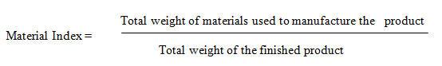
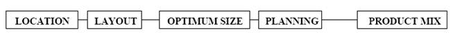

ARM402 :: Lecture 30 :: SETTING UP A SMALL INDUSTRY - LOCATION AND STEPS FOR STARTING A SMALL INDUSTRY

Learning Objectives
- Need For Enterprise Location
- Steps In Enterprise Location
- Steps For Starting A Small Industry
Location of industry is concerned with the least cost location, so that again transport costs are a crucial element in the location decision. A German economist, Alfred Weber devised the theory of industrial location, in 1909. In the early part of the industrial revolution factories developed in areas that were already producing manufactured goods. These were the places where woolen textiles were produced in farmhouses on farms that bred the sheep. The shift was from the farmhouse to a mill, in the same area. By chance many of these textile mills were on coalfields, so that when the shift from water powered to steam coal powered mills occurred, the transition was in the same place. The same thing happened as steel production was also shifted from local forges to coal powered mills. The early industrial revolution saw mills and factories develop on coalfields, and remain entrenched there for more than a century.
By the end of the 19th century, these raw material locations were losing their ascendancy. At the beginning of the industrial revolution roads were poor quality and slow. Canals were rapidly constructed to move heavy industrial materials, but nowhere did these form a really convenient network. It was the development of railways into extensive networks by the end of the 19th century, which enabled industrial location to free itself from raw material sites. This trend continued with roads and vehicles in the twentieth century, but water transport and especially the sea, remained dominant for long distance transport of industrial goods. Weber’s analysis came at the point where railway networks had developed to their ultimate extent. He was therefore concerned with the balance of location between raw material site, the market for manufactured goods, and transport.
Some Definitions
The factory or plant is an individual building or premises that produce manufactured goods. A company may own several factories, probably in different locations. The industry comprises many factories, or plants, and a number of independent companies. Industrial location is primarily concerned with the sitting of a single factory, rather than the whole industry, although the location of the industry is in itself a locational factor. The concepts of site and situation play separate roles, although we may use the word site in relation to location when we are really looking at the situation of the factory.
The site of a factory, or group of factories, is the actual physical location, or block of land. There are some basic locational constraints for the site, such as a plentiful supply of flat land, access to transport, power and water, availability of labour, and capital and finance facilities. Almost all cities will possess appropriate industrial sites and these will be zoned by councils.
It is therefore the situation, or the relative location, in relation to other factories and the industry that is important. Like agricultural and central place location theories, Weber makes assumptions that simplify reality, but unlike these other theories, he does not assume an equal distribution. Rather he assumes that raw materials are unequally distributed in fixed locations.
Assumptions
- There is an uneven distribution of natural resources on the plain. Raw materials are concentrated in specific sites.
- The size and location of markets are given at fixed points on the plain.
- There are fixed locations of labour where wage rates are fixed and labour is immobile and unlimited (capitalists love that).
- The area has a uniform culture, climate and political system.
- Entrepreneurs minimise costs of production.
- Perfect competition exists.
- Costs of land, structures, equipment and capital do not vary regionally.
- There is a uniform system of transport over a flat surface.
Raw Material or Market Site
In the first instance we consider whether to locate an industry in the raw material or market location. If there is no weight loss or weight gain in production, you site your factory at either location, because the transport costs are the same each way. The diagram on the handout illustrates how isotims of equal cost distance are constructed around each site, thereby creating intersection points of equal but higher values, termed isodapanes.
As transport costs are not identical for raw material and manufactured goods a relative weighting must be calculated. Weber did this with a material index, whereby the relative weight gain or loss is calculated.

If the product is a pure material its index will be 1. If the index is less than 1 the final product has gain weight in manufacture, thus favouring production at the market place. The weight gain is most likely to come from the addition of ubiquitous materials, like water, that we can expect to occur anywhere. Such a product would be a drink, soft drinks or beer, where a small quantity of usually dried materials are added to water and bottles to make a much heavier and more fragile final product. Most products lose weight in manufacture, such as a metal being extracted from an ore. Thus their material index will be more than 1, thus favouring the raw material site.
The significance of the material index is in calculating precisely the difference between the unit transport costs of raw materials and finished products. The number of the index is used to calculate a relative weighting, which is then applied to the spacing/radius of the isotims. The locational triangles on the handout are small examples of the weighting of more than one material.
While the drawing of isotims and isodapanes is very straightforward for 2 sites, it is in adding a number of material sites and markets that the spatial model both increases in complexity and begins to provide a useful method for calculating the least cost location. As well as weight loss or gain the material index and weighting of transport costs can also take account of loss or gain in transport, of features such as perishability, fragility and hazard.
Need for enterprise location
The need for plant location arises under the following circumstances:
- When a new enterprise is to be established.
- In the case of established enterprise, the need for enterprise location arises when expansion, decentralization and diversification is undertaken to meet the increased demand for its products.
- Whenever the existing factory is not in a position to obtain renewal of lease.
- When an undesirable location is to be abandoned.
- When the tendency of shifting the market, depletion of raw materials, changes in transportation facilities, new processes requiring a different location are observed in a factory.
- When a new branch or branches are to be opened for increasing the volume of production or distribution or both.
Steps in Enterprise Location
1. Selection of the region
2. Selection of the locality or community
3. Selection of the exact site, and
4. Selection of an optimum site

- Analyse yourself and your objectives
- Date with yourself for newer ideas
- Consult publications and agencies
- Discuss with all around you and with sisi and d.i. Office
- Date with yourself for a decision
- Choose a line
- Decide on form of ownership (sole proprietory/ partnership/co-operative/company (private/public)
- Decide whether to purchase a going concern or to start a new one
- Obtain the project report from sisi or elsewhere or prepare it yourself
- Decide on location and site
- Arrange the workshed with facilities (preferably on rent)
- Make sure what laws will particularly affect you.
- Obtain clearance from central, state and local authorities and ssi regn. No.
- Plan finance
- Plan sources of machinery
- Place order for machinery(preferably on hire-purchase)
- Apply for materials (if imported or controlled)
- Plan buying
- Install machinery
- Procure materials
- Recruit personnel
- Trial run
- Decide on pricing policy
- Organise marketing
- Plan out record-keeping
- Produce
- Sell
- Keep up-to-date
- Plough back profits
- Diversification
- Modernisation
- Compete with others
- Grow bigger
- Ancillary development
| Download this lecture as PDF here |